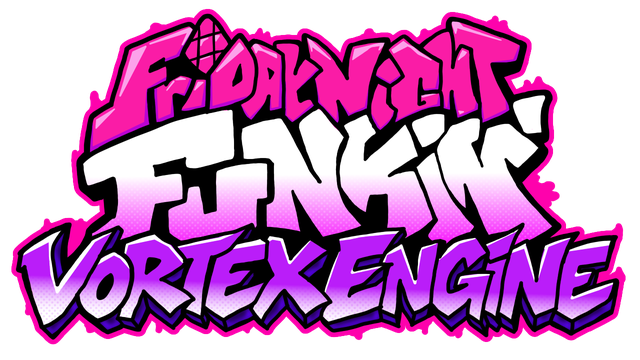
A Psych Engine 1.0.4 fork that also runs V-Slice mods, adds online multiplayer, and brings the new Funkin' menus to every mod.
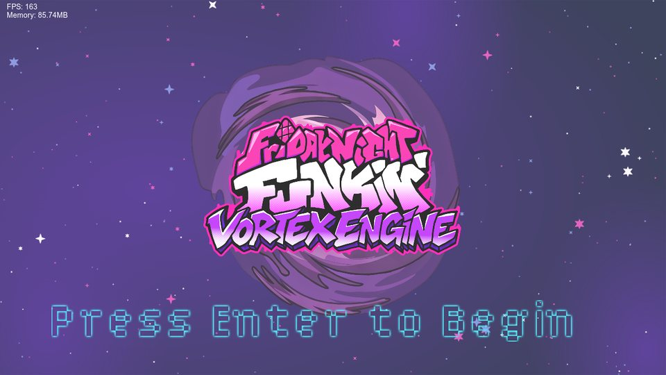
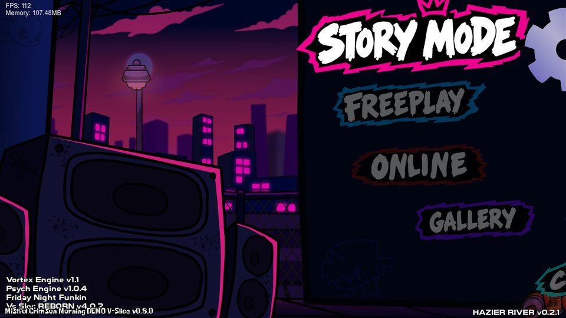
Supports everything on the Psych Engine Lua Script API page
Vortex Engine runs Psych Engine 1.0.4's Lua in full: every function, callback and variable documented on ShadowMario's Psych Engine Lua Script API page works here the same way. Your Psych scripts run as they are, and Vortex adds more on top of them.
https://shadowmario.github.io/psychengine.lua/What's inside
Everything Psych Engine has, plus V-Slice mods, multiplayer, and a lot of new options and tools for players and modders.
V-Slice mod support
Play mods made for the official game (Polymod, .hxc scripts) next to your Psych mods, with no porting.
Online multiplayer
Play a song against a friend by IP. The port opens by itself, there's a chat, and a missing mod can be sent to the other player.
V-Slice menus for everyone
Freeplay with the DJ, Character Select, the Results screen and the sticker transition, for Psych songs too.
Extra keys
Songs with 1 to 9 arrows per side, for mods like Shaggy's 6 and 9 key songs, with their own keys.
Extra characters
More singers in a song (a duet, a third character...), set up in the chart editor with no script.
3D
Sprites, receptors and notes turned in 3D, whole cameras tilted in perspective, and .obj models.
Tutorials
A Tutorial button on the menus and editors: Boyfriend zooms into each part of the screen and explains it.
Better editors
Box selection in the chart editor, mouse tools and undo in the others, and a Character Select / Results editor.
More scripting
New Lua functions, callbacks and properties, state scripts for the menus, and a check for mods made for other engines.
Mods for the official game, as they are
Put a V-Slice mod in the mods folder and it shows up in the game like any other mod.
- Scripts:
.hxcsong, stage, character, module, dialogue, Freeplay and results scripts run through Vortex's own interpreter. - Content: V-Slice charts (every difficulty and variation), stages, characters (Sparrow, Packer, multi-sparrow and Adobe Animate atlases), song events, note kinds and dialogue.
- Utility mods: a mod with scripts and no songs (a pause menu, a HUD, a camera module) runs on the songs of every mod.
- Playable characters appear in Character Select with their own Freeplay DJ and results animations.
- Base game content built in: the V-Slice weeks, stages and characters come with the engine.
- Made for mods targeting the V-Slice 0.8.x API (0.8.0 up to 0.8.6).
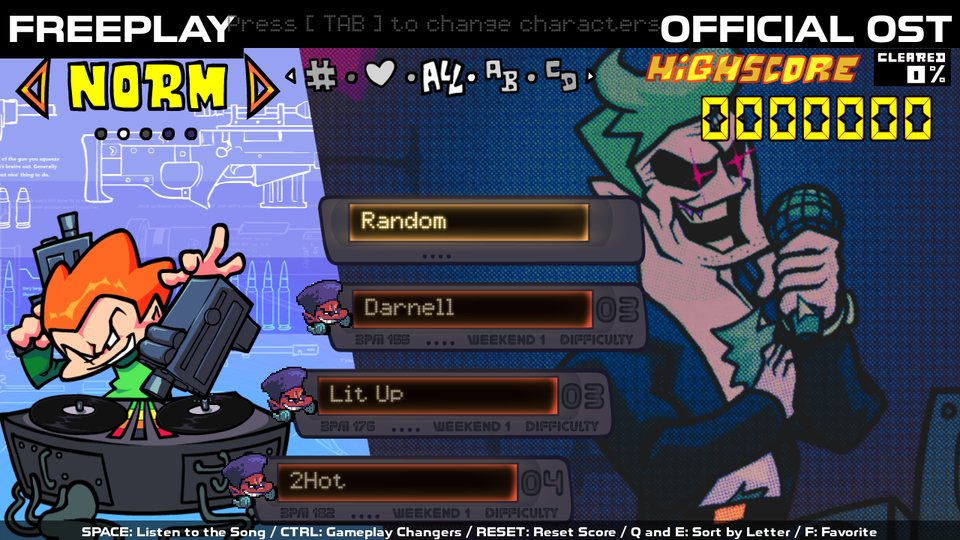
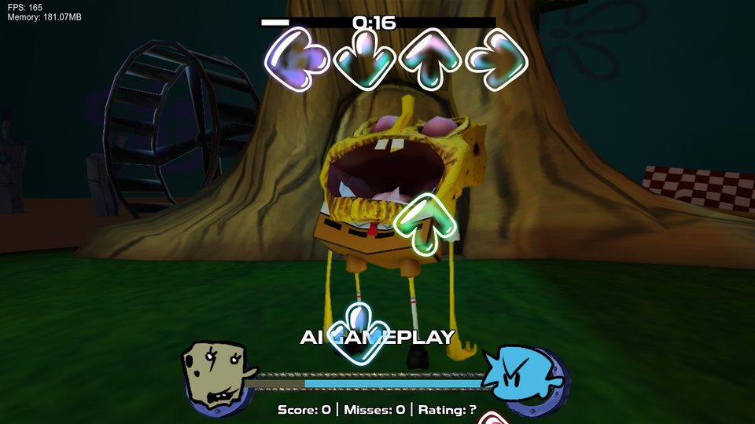
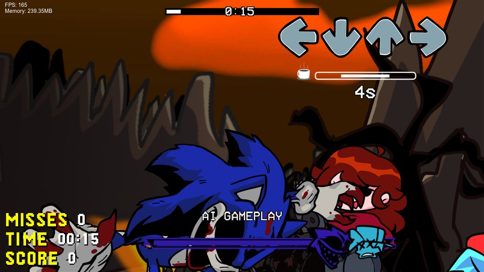
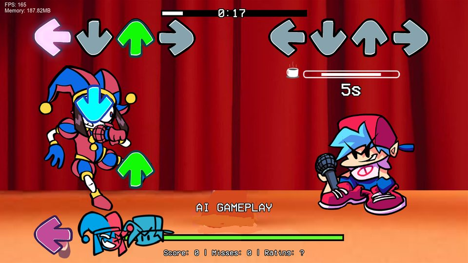
Community V-Slice mods running as they are. The mods belong to their creators.
Play a song against a friend
- Host or join by IP (port
8888). CTRL+V pastes the IP. - No Radmin or Hamachi needed when the router allows it: hosting opens the port by itself (UPnP) and shows the IP to send. If it can't, the screen says why, and a VPN still works.
- Chat: T opens it in the lobby, during the song and on the results.
- The other player's preferences (P in the lobby), and their notes seen the way they see them.
- Sending a mod: a song from a mod the other player doesn't have can be sent to them and installed, after they accept.
- Match setup: win by Score, Misses or Accuracy, with live stats and a results screen for both players.
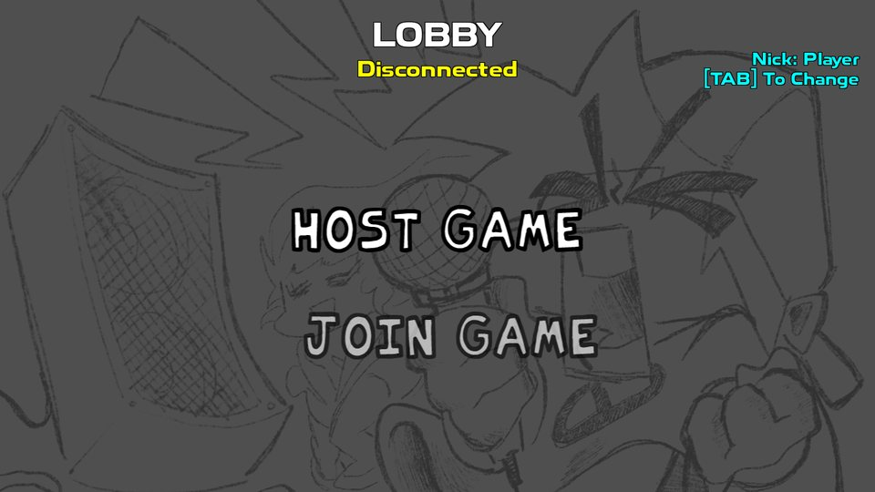
New gameplay changers and options
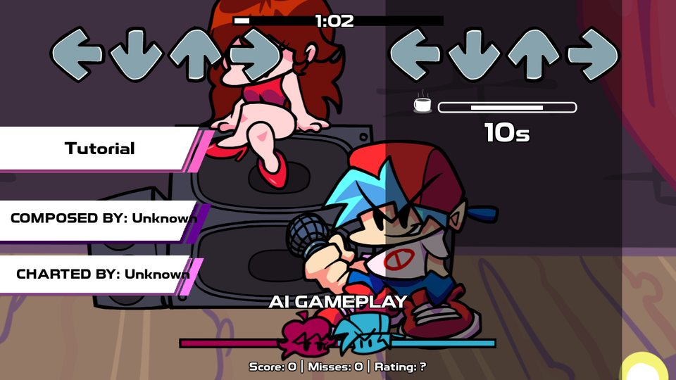
Gameplay changers
- Play as Opponent: play the opponent's notes while the computer plays Boyfriend's.
- Health Drain: every note the opponent hits takes a little health (it never kills).
- Speed Up on Miss: every miss makes the song 5% faster, up to 2x.
- Ghost Notes: two notes of the same character close together leave an afterimage.
- Only Sick: anything worse than a Sick counts as a miss.
- Random Chart, Random Scroll Invert, Fade In / Fade Out and Random Note Speed.
Options
- Break Timer: a countdown when there are 3 seconds or more without notes.
- Click Between Frames (Windows): each key press counts from the moment it was made, like the Geometry Dash mod.
- Keystrokes: the keys you press on the screen, WASD or DFJK style, with keys per second.
- Lane Underlay, Hold Note Covers, Sustain Wiggle, Icon Bop, Smooth Health Bar.
- Supersampling for smoother edges, Window Mode and Sharpness.
- Mods tab: the settings that Psych and V-Slice mods add, in the options menu.
1 to 9 arrows per side
A chart with "keyCount": 6 (or Psych Engine Extra Keys' "mania") plays with 6 arrows. The chart editor's "Arrows per side" changes it, and Options → More → Extra Keys sets the keys of each arrow.
| Arrows | Columns | Default keys |
|---|---|---|
| 1 | middle | Space |
| 2 | ← → | F J |
| 3 | ← middle → | F Space J |
| 5 | ← ↓ middle ↑ → | D F Space J K |
| 6 | ← ↑ → ← ↓ → | S D F J K L |
| 7 | ← ↑ → middle ← ↓ → | S D F Space J K L |
| 8 | ← ↓ ↑ → ← ↓ ↑ → | A S D F H J K L |
| 9 | ← ↓ ↑ → middle ← ↓ ↑ → | A S D F Space H J K L |
Better tools, and a guide on every screen
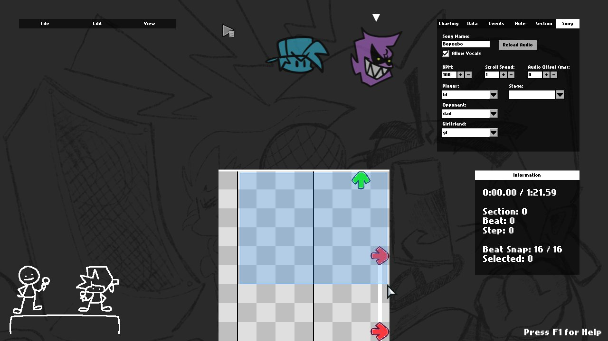
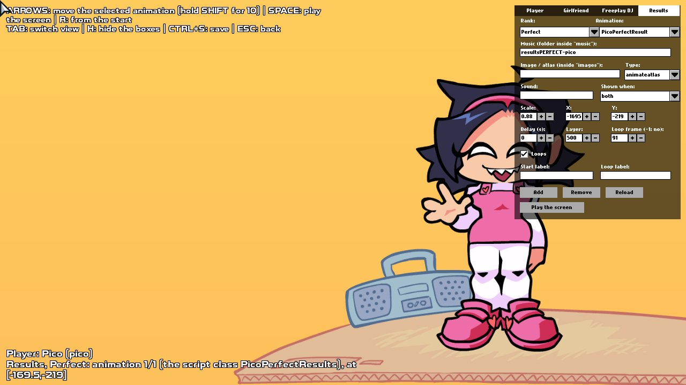
Chart Editor
A music player bar, box selection, cut / copy / paste and undo, extra characters' fields, and new chart events with no script needed.
Stage, Character and more
Move things with the mouse, with undo, in the Stage, Character, Dialogue Portrait and Menu Character editors.
Tutorials
The Tutorial button (or F6): Boyfriend explains each part of the screen. Mods can add their own with a JSON file.
Psych's Lua and HScript, and more
Every Psych Engine Lua and HScript script works, and so do V-Slice's .hxc scripts. On top of them:
- Cameras of your own and shaders on whole cameras.
- 3D:
angleX,angleYandzon sprites and notes, tilted cameras and.objmodels. - Notes and extra characters added during the song.
- The game's window: title, position, size and message boxes.
- State scripts: change the menus and make your own loading screen.
function onCreatePost()
if VortexEngine then
-- a camera of the script's own, over the HUD
makeLuaCamera('fx', 'hud')
addCameraShader('fx', 'chromatic', 'chroma')
-- a spinning 3D model on the stage
makeLuaModel('ring', 'ring', 'ringTexture', 640, 300)
addLuaSprite('ring', false)
end
end
function onBeatHit()
if curBeat == 64 then
-- the HUD leans back like a 3D modchart
tweenCamera3D('lean', 'hud', 30, 0, 0, 1, 'quadOut')
end
endVortexEngine variable before using them,
and use the CHECK MOD button in the mods menu: it lists everything a mod uses that only Vortex has, with the file and line.
Questions, bugs, mods, or someone to play online with
Join the Vortex Engine Discord server.